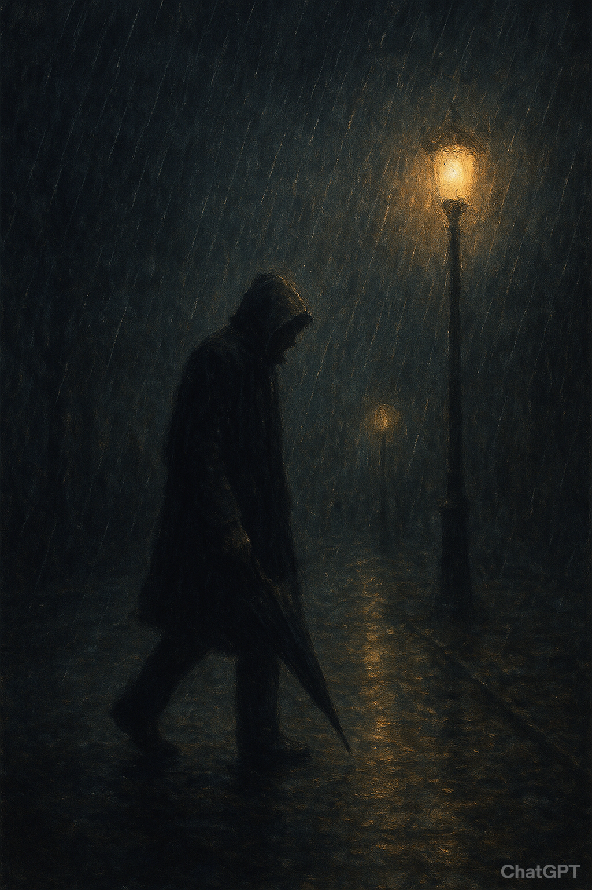
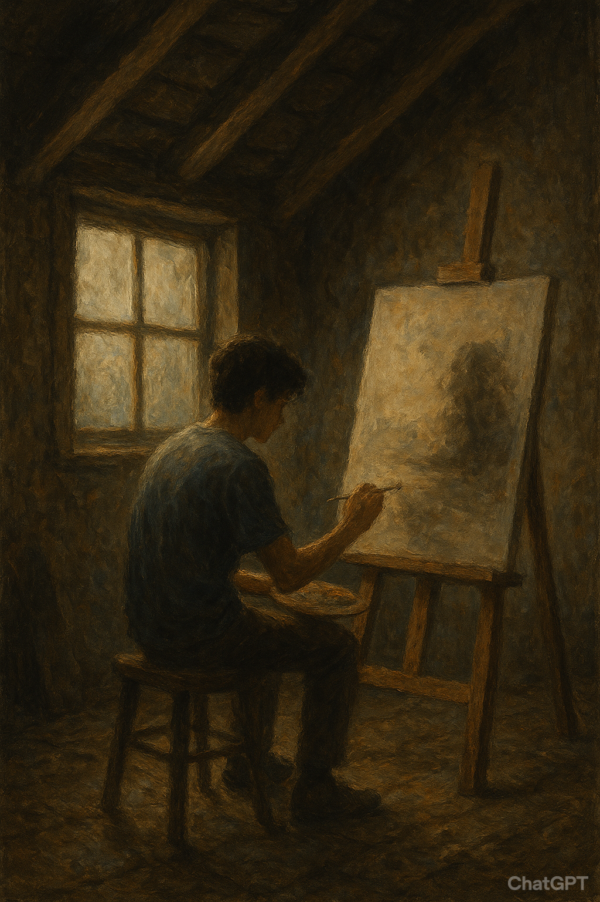
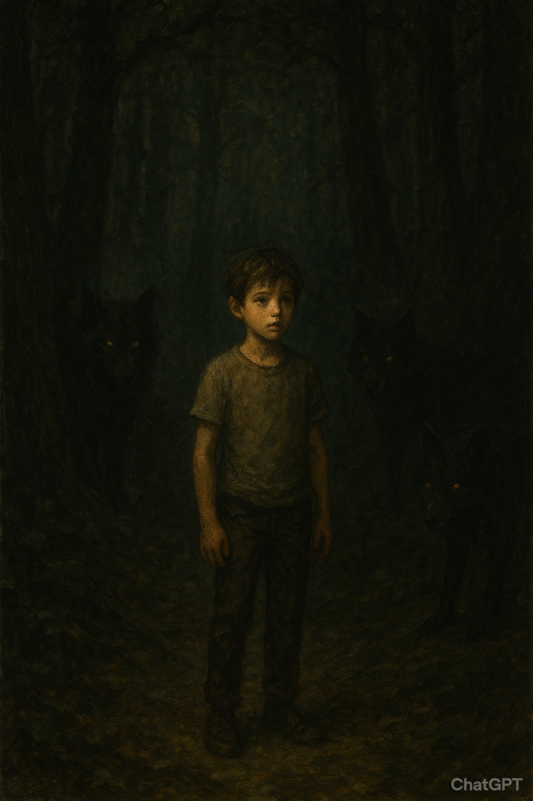
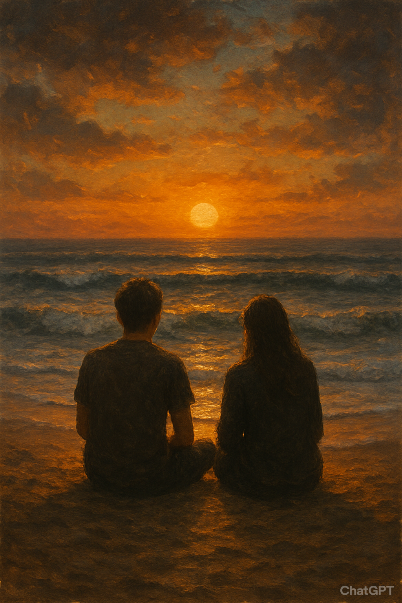
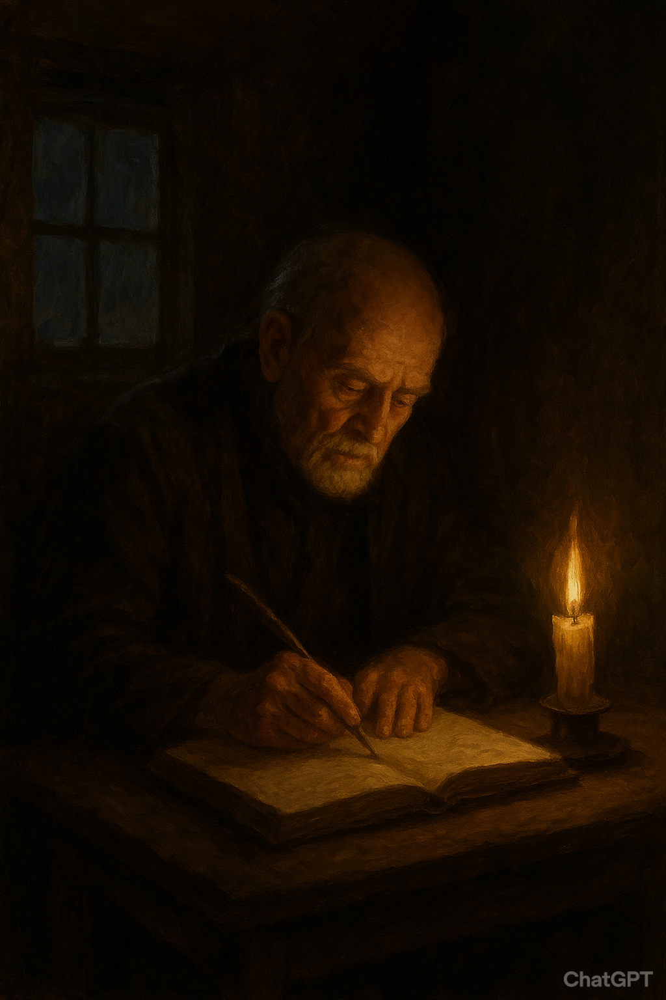

Người lữ khách trong mưa

Trời đêm buông xuống, cả thị trấn nhỏ ngập trong những cơn mưa nặng hạt. Đường phố vắng lặng, chỉ còn ánh đèn đường
vàng vọt hắt xuống mặt đường loang loáng nước. Trong màn mưa ấy, một người lữ khách khoác chiếc áo choàng sẫm màu
lặng lẽ bước đi, đôi giày sũng nước phát ra những âm thanh nặng nề.
Ông dừng lại trước hiên một quán trọ cũ, nơi ngọn đèn dầu leo lét soi sáng tấm biển gỗ bạc màu. Bà chủ quán trọ –
một người phụ nữ già với mái tóc bạc phơ – lặng lẽ nhìn ông từ phía trong. Bà đã quen với những kẻ qua đường: thương
nhân, kẻ giang hồ, thậm chí cả những kẻ chạy trốn. Nhưng ánh mắt của người lữ khách này lại khác hẳn. Nó chứa đựng
nỗi buồn sâu thẳm, như thể đã chứng kiến quá nhiều mất mát mà chẳng thể nào nói ra bằng lời.
Trong căn phòng nhỏ hẹp, ông ngồi bên cửa sổ, nhìn những giọt mưa rơi tí tách xuống bậu cửa. Trên bàn chỉ có một
chén trà nóng và một cây nến chập chờn. Bà chủ gõ cửa, mang đến cho ông một chén súp nóng. Ông gật đầu cảm ơn, nhưng
giọng nói khàn đục chỉ thốt được vài từ ngắn ngủi.
– “Ông đi đâu về đâu?” – bà hỏi, như một thói quen.
Người lữ khách khẽ nhắm mắt, im lặng thật lâu rồi đáp:
– “Tôi đi tìm một nơi… mà có lẽ chẳng bao giờ tồn tại.”
Bà không hỏi thêm. Trong đời, bà đã gặp nhiều người như thế, mang trong lòng một câu chuyện chưa từng kể. Bên ngoài,
mưa vẫn rơi không dứt. Trong căn phòng nhỏ, ánh nến hắt bóng người lữ khách lên vách tường, dài và run rẩy như một
kẻ mãi mãi không có chốn dừng chân.
Bức tranh không hoàn thành

Trong căn gác nhỏ giữa lòng thành phố, An – một họa sĩ trẻ – đã ngồi trước giá vẽ suốt ba tháng liền. Trên khung
tranh là những mảng màu dang dở, nét bút chồng chéo nhưng chẳng thể thành hình. Cô cố gắng vẽ một bức tranh về bình
minh, nhưng càng tô vẽ, càng thấy bức tranh như bị bao phủ bởi bóng tối.
Mỗi buổi sáng, An dậy thật sớm, mở cửa sổ để ánh nắng lọt vào, nhưng ánh sáng đó lại chẳng thể chạm đến trái tim
đang u ám của cô. Những người bạn thân thiết đều khuyên cô nên nghỉ ngơi, nhưng An chỉ lắc đầu: “Nếu tôi không vẽ
xong bức tranh này, tôi sẽ mãi không tìm thấy chính mình.”
Một buổi tối mưa, điện trong nhà tắt phụt, căn phòng chìm vào bóng tối. Trong khoảnh khắc ấy, An bất giác nhận ra:
chính sự ép buộc đã khiến cô không thể chạm đến vẻ đẹp thật sự của cuộc sống. Nghệ thuật không phải là sự hoàn hảo,
mà là tiếng nói của tâm hồn.
Ngày hôm sau, cô cầm cọ, vẽ lên bức tranh những đường nét đơn giản nhưng chân thật. Thay vì bình minh rực rỡ, bức
tranh hiện lên một buổi sáng mờ sương, ánh sáng yếu ớt len lỏi qua mây xám. Nhưng kỳ lạ thay, khi hoàn thành, An mỉm
cười. Bức tranh chưa hẳn đẹp, nhưng đó chính là bản thể của cô – một con người đang dần tìm lại sự cân bằng.
Đứa trẻ trong rừng

Giữa khu rừng già, một cậu bé bị bỏ lại từ nhỏ sống cùng đàn sói. Người dân trong làng gọi cậu là “Đứa trẻ trong rừng”. Ai cũng sợ hãi, bởi họ tin rằng cậu mang theo lời nguyền.
Một ngày, có nhóm thợ săn lạc đường. Khi đêm xuống, họ run rẩy bên đống lửa nhỏ thì cậu bé xuất hiện. Không nói lời nào, cậu chỉ đặt xuống một giỏ quả dại và vài khúc gỗ khô, rồi biến mất vào bóng tối. Nhờ đó, nhóm thợ săn mới sống sót qua đêm lạnh giá.
Sáng hôm sau, họ tìm thấy cậu đứng trên mỏm đá, mắt hướng về mặt trời. Trong ánh sáng ban mai, cậu không giống một “đứa trẻ bị nguyền rủa”, mà giống như một phần của thiên nhiên, thuần khiết và mạnh mẽ. Người thợ săn già nhất thì thầm: “Có lẽ chúng ta mới là kẻ lạc loài, còn nơi này mới thật sự thuộc về nó.”
Từ đó, trong làng chẳng ai còn dám gọi cậu bằng cái tên xấu xa kia nữa. Họ chỉ lặng lẽ tin rằng, giữa rừng sâu, luôn có một đứa trẻ lặng lẽ dõi theo, bảo vệ con người theo cách riêng của mình.
Biển và lời hứa

Thuở nhỏ, Hòa và Nam thường ngồi bên bờ biển, nơi sóng vỗ rì rào, và cùng nhau ước hẹn: “Sau này, dù có đi đâu, nhất định chúng ta sẽ quay lại đây.”
Nhiều năm trôi qua, Nam rời quê hương để theo đuổi ước mơ ở thành phố lớn, còn Hòa ở lại chăm sóc gia đình. Thời gian khiến khoảng cách giữa họ ngày một xa. Nhưng mỗi lần nghe tiếng sóng, Hòa lại nhớ đến lời hứa xưa, vẫn giữ niềm tin một ngày Nam sẽ trở về.
Một chiều cuối hạ, khi mặt trời đỏ rực đang lặn xuống biển, Hòa bất ngờ thấy bóng một người đàn ông đứng ở bãi cát xa xa. Nam đã trở về, mái tóc anh nhuốm màu sương gió. Họ chẳng cần nói nhiều, chỉ lặng im ngồi cạnh nhau, nghe tiếng sóng như bản nhạc quen thuộc của tuổi thơ.
Biển vẫn vậy, chỉ con người là đổi thay. Nhưng lời hứa năm xưa, qua bao năm tháng, vẫn còn nguyên giá trị – như sóng biển, mãi không ngừng xô vào bờ.
Ngọn lửa cuối cùng

Trong ngôi làng nhỏ giữa mùa đông khắc nghiệt, củi đã cạn kiệt. Người dân co ro trong giá lạnh, chỉ còn lại duy nhất một bó đuốc cháy dở ở giữa quảng trường. Họ tranh cãi dữ dội: Ai sẽ được giữ ngọn lửa này?
Người thợ rèn nói rằng ông cần nó để rèn công cụ, người mẹ trẻ van xin để sưởi ấm cho con nhỏ, còn người già thì cho rằng lửa phải dành cho cả làng. Cuối cùng, tất cả im lặng khi một cậu bé bước lên, cẩn thận dùng ngọn lửa ấy nhóm vào nhiều bó đuốc nhỏ, rồi chia đều cho từng người.
Người dân bàng hoàng nhận ra: ngọn lửa không mất đi, mà chỉ trở nên lớn hơn khi được chia sẻ. Đêm hôm ấy, cả làng cùng ngồi quanh đống lửa mới, hơi ấm lan tỏa, tiếng cười vang khắp nơi.
Từ đó, họ gọi cậu bé ấy là “Người giữ lửa”, bởi cậu không chỉ giữ lại ngọn lửa duy nhất của làng, mà còn thắp sáng niềm tin cho tất cả mọi người.